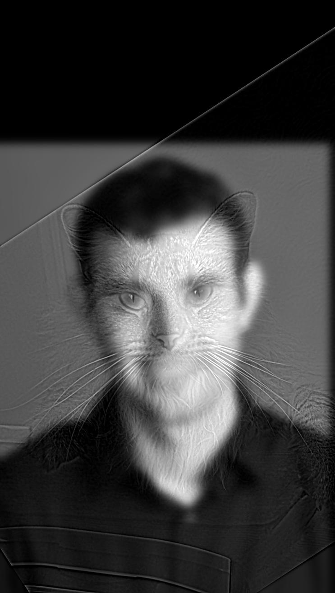

|
|
This project explores the use of image frequency manipulation to modify images and produce compelling visual effects. Starting from applying filters to blur and sharpen features, we are then able to create hybrid and blended images by combining different frequencies and utilizing Gaussian and Laplacian stacks.
An edge detection algorithm was implemented by using the finite difference operators $Dx$ and $Dy$.
$$ D_x = \begin{bmatrix} 1 & -1 \end{bmatrix}$$ $$ D_y = \begin{bmatrix} 1 \\ -1 \end{bmatrix}$$$Dx$ calculates changes in intensity of adjacent pixels in the horizontal direction, while its transpose, $Dy$ calculates changes in the vertical direction. Thus, convolving the image with $Dx$ and $Dy$ produces the partial derivatives in $x$ and $y$ respectively. These partial derivatives can then be combined to compute the gradient magnitude $G_m$ which shows the strength in changes in intensity.
$$\frac{\partial Img}{\partial x} = Img * D_x $$ $$\frac{\partial Img}{\partial y} = Img * D_y $$ $$G_m = \sqrt{(\frac{\partial Img}{\partial x})^2 + (\frac{\partial Img}{\partial y})^2}$$This gradient magnitude image is then binarized to produce the edge image.
 Figure X: Original image cameraman.png. |
 Figure X: Partial $x$ derivative. |
 Figure X: Partial $y$ derivative. |
 Figure X: Binarized edge image with threshold $= 0.25$. |
While the finite difference operators are effective in detecting changes in pixel intensity, they can be sensitive to noise. To reduce noise, the function gaussian_blur was created to blur the image using a 2D Gaussian filter. By first blurring the image, and then applying the finite difference operators, smoother results were produced. For these images, the Gaussian kernel was created with radius $r=3$ and standard deviation $\sigma=1$.
 Figure X: Partial $x$ derivative after Gaussian blur. |
Figure X: Partial $y$ derivative after Gaussian blur. |
 Figure X: Binarized edge image with threshold $= 0.1$. |
Compared to the initial result without filtering, the filtered edge image has smoother, clearer lines and fewer dots of noise.
Alternatively, because convolution is commutative, the same effect can also be achieved by using the derivative of the Gaussian (DoG) filter. To this end, the Gaussian kernel was convolved with $Dx$ and $Dy$, and then the image was convolved with $Dx$ and $Dy$ to show the partial derivatives.
|
Figure X: $D_x$ after convolving with the Gaussian kernel. |
Figure X: $D_y$ after convolving with the Gaussian kernel. |
 Figure X: Partial $x$ derivative using the derivative of the Gaussian. |
Figure X: Partial $y$ derivative using the derivative of the Gaussian. |
 Figure X: Binarized edge image with threshold $= 0.097$. |
In order to sharpen an image $f$, an unsharp mask filter can be used. By convolving with a Gaussian filter, the image is blurred to retain the image's low frequencies. Thus, to extract the high frequencies, the blurred image is extracted from the original image. The high frequencies are then multiplied by the sharpening factor $\alpha$ and added back to the original image
$$f_{\text{sharp}} = f + \alpha (f - f * g) = (1 + \alpha) f - \alpha f * g = f * ((1 + \alpha)e - \alpha g)$$- $f =$ original image
- $f_{\text{sharp}} =$ sharpened image
- $g =$ Gaussian filter
- $\alpha =$ sharpening factor that controls the strength of the high-frequency details added back to the original image
- $e =$ unit impulse filter
 Figure X: Original image taj.jpg. |
Figure X: Sharpened taj.jpg with $\alpha=2$. |
Figure X: Sharpened taj.jpg with $\alpha=5$. |
|
Figure X: Original image montmartre.jpg. |
 Figure X: Sharpened montmartre.jpg with $\alpha=2$. |
 Figure X: Sharpened montmartre.jpg with $\alpha=5$. |
Increasing $\alpha$ strengthens the high-frequency details in the sharpened image.
Re-sharpening a Blurred Image
In the following process, the original image of my cat Luna luna_small.jpg was first blurred and then "restored" by applying the unsharp mask filter.
|
Figure X: Original image luna_small.jpg. |
 Figure X: Blurred image luna_small_blurred.jpg. |
 Figure X: Blurred then sharpened with $\alpha=2$. |
 Figure X: Blurred then sharpened with $\alpha=5$. |
High-pass and low-pass filters can be used to create hybrid images by combining the low-frequency components of one image, lo_im, with the high-frequency components of another, hi_im. When overlaid, hi_im is prominent when viewed up close, while the lower frequencies from lo_im dominate from a distance, as low-frequency features are more easily perceived at a longer distance.
Derek & Nutmeg
 Figure X: Original image DerekPicture.jpg. |
 Figure X: Original image nutmeg.jpg. |

Figure X: Grayscale hybrid image of Derek & Nutmeg. |
Figure X: Colored hybrid image of Derek & Nutmeg. |
Real-life Elana & Elana as a drawing
|
Figure X: Elana at La Note. |
 Figure X: Elana's self-portrait drawn using Procreate. |
Figure X: Grayscale hybrid image of Elana. |
Figure X: Colored hybrid image of Elana. |